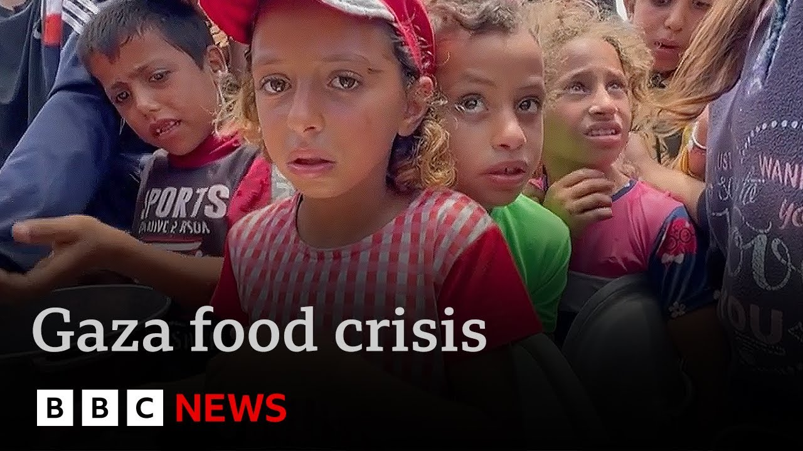

【呼吁对以色列实施武器禁运，加沙儿童面临饥饿 | BBC新闻】
Summary: The Spanish government calls for an arms embargo on Israel unless it stops attacks on Gaza, as 30 Palestinians were killed in air strikes and aid remains critically insufficient amid a blockade, leaving children severely malnourished and traumatized.
摘要： 西班牙政府呼吁对以色列实施武器禁运，除非其停止对加沙的袭击。空袭造成30名巴勒斯坦人死亡，而封锁导致援助严重不足，儿童严重营养不良并遭受心理创伤。

⏱️ Estimated Reading Time: 9 min
Israel should face an arms embargo if it doesn't stop its attacks on Gaza, says the Spanish government, which is hosting a meeting in Madrid of Arab and European countries, including the UK, on how to end the war.
西班牙政府表示，如果以色列不停止对加沙的袭击，就应面临武器禁运。西班牙正在马德里主持阿拉伯和欧洲国家（包括英国）的会议，讨论如何结束战争。
Today, Israeli air strikes killed 30 Palestinians, while yesterday, two members of the International Red Cross were killed.
今天，以色列空袭造成30名巴勒斯坦人死亡，而昨天，两名国际红十字会成员遇难。
Some limited aid of 107 trucks did enter Gaza, but humanitarian organizations say that much more, up to 600 trucks a day, is what is desperately needed following 11 weeks of a blockade on aid by Israel.
仅有107辆卡车的有限援助进入加沙，但人道主义组织表示，在以色列封锁援助11周后，每天急需多达600辆卡车的援助。
Fergle Keen reports now on the situation facing the youngest members of Gaza's population.
弗格尔·基恩报道了加沙最年幼居民面临的处境。
And there are distressing images.
画面令人痛心。
We see it and we hear it from far away but in sound and color.
我们从远处看到和听到，声音和画面清晰。
An agony that cannot be denied.
这是无法否认的痛苦。
This is a sermon and he is 5 years old.
这是一名5岁的男孩。
Today a British doctor captured these images in the pediatric ward of Nasser Hospital.
今天，一名英国医生在纳赛尔医院的儿科病房拍下这些画面。
The young and vulnerable.
年幼而脆弱。
really shocking skin and bone.
瘦骨嶙峋，触目惊心。
There was abundant aid that could have helped them.
本有充足的援助可以帮助他们。
But nearly three months of Israeli blockade kept it out of Gaza.
但近三个月的以色列封锁使援助无法进入加沙。
How they were once and how they are now.
他们曾经的样子与现在的对比。
These children are so malnourished that they're actually wasting away.
这些儿童营养不良，身体正在衰竭。
Um it's it's shocking to see this degree of malnutrition and it's because of the blockade.
这种程度的营养不良令人震惊，而这是封锁造成的。
The hunger ward, where a colleague first met five-month-old Si Ashure, [Music] allergic to regular milk formula, the special variety she needed was running out under the blockade.
在饥饿病房，同事初次见到五个月大的西娅舒尔，她对普通奶粉过敏，而封锁导致她所需的特殊配方奶粉即将耗尽。
When I change her, her body is very bad and dehydrated.
当我给她换尿布时，她的身体非常糟糕且脱水。
She's like a skeleton.
她瘦得像骨架。
Whenever I look at her, I cry.
每次看她，我都会哭。
I cannot bear how thin she is.
我无法忍受她如此瘦弱。
[Music] Her condition stabilized and a week ago, Siar was sent home from the busy hospital with a can of baby formula.
她的情况稳定后，一周前，西娅带着一罐婴儿配方奶粉从繁忙的医院出院。
The situation is very dire.
情况非常严峻。
We're staying in a tent and there are many insects.
我们住在帐篷里，有很多虫子。
The insects come at her.
虫子会爬到她身上。
I have to cover her with a scarf so nothing touches her.
我必须用围巾盖住她，以免任何东西碰到她。
Even though Israel is now allowing some aid into Gaza, there's nothing like enough nutrition for Siwir.
尽管以色列现在允许一些援助进入加沙，但对西娅来说远远不够。
Her mom says her weight has dropped again in recent days.
她母亲说，她的体重最近又下降了。
Currently, there is no food or nutrients.
目前没有食物或营养品。
The water is polluted and we force ourselves to drink it.
水被污染，我们被迫饮用。
We don't have food or bread.
我们没有食物或面包。
The shelter was hit by gunfire when people attempted to loot food nearby.
当人们试图抢劫附近食物时，避难所遭到枪击。
When Si hears the sounds of the rockets, she gets startled and she cries.
当西娅听到火箭弹的声音时，她会受惊哭泣。
She understands these things.
她明白这些事。
The sound of the tanks, warplanes, and rockets are so loud and they are close to us.
坦克、战机和火箭弹的声音非常大，而且离我们很近。
And if she was sleeping, she would wake up startled and crying.
如果她在睡觉，会被惊醒并哭泣。
[Applause] The Israeli government said 3 days ago there was no food crisis in Gaza, but that it was now allowing aid to prevent one.
以色列政府三天前表示加沙没有粮食危机，但现在允许援助以防止危机发生。
Life is hunger, fear, and trauma.
生活就是饥饿、恐惧和创伤。
Dr. Wasim say is a British plastic surgeon who's just returned from Gaza.
瓦西姆医生是一名英国整形外科医生，刚从加沙返回。
He's treated many children like six-year-old Nur who suffered severe blast and burn injuries in an Israeli air strike.
他治疗过许多像六岁的努尔这样的儿童，她在以色列空袭中遭受严重爆炸和烧伤。
[Music] Lack of nutrition is making it much harder for wounds to heal.
缺乏营养使伤口更难愈合。
He says you could see um people losing hope.
他说，你能看到人们失去希望。
Uh you could see how depressed they were.
你能看到他们多么沮丧。
the nutritional status of everybody was appalling.
每个人的营养状况都很糟糕。
Um, so graphs were not taking, wounds were not healing.
伤口无法愈合。
Yet for all that he's seen, this British doctor wants to go back.
尽管目睹这一切，这位英国医生仍想回去。
It's his human duty.
这是他人性的责任。
He told us kind of get forgotten.
他告诉我们，这里的人似乎被遗忘。
None of this needed to happen.
这一切本不必发生。
Every time you see a child, you think of your own children and how it Yeah.
每次看到孩子，你会想到自己的孩子。
Well, you try not to at the time because it would be un, you know, you couldn't work if you thought what if this was happened to my daughter or heaven forbid or something like that.
你尽量不去想，因为那样会无法工作——如果这是你的女儿怎么办？
Set against the raging war, a child's life is a fragile thing, but loved dearly from one heartbeat to the next.
在战争的肆虐下，孩子的生命脆弱，但每一刻都被深爱。
Fertil Keen, BBC News.
弗格尔·基恩，BBC新闻。
Well, Israel does not allow international media organizations, including the BBC, into Gaza, and we use trusted freelance teams on the ground.
以色列不允许包括BBC在内的国际媒体进入加沙，我们依靠当地可信的自由记者团队。
Let's turn now to our correspondent, Barbara Plet Usha, who's in Jerusalem for us.
现在请听我们在耶路撒冷的记者芭芭拉·普莱特·乌沙的报道。
And Barbara, some terrible scenes of suffering there.
芭芭拉，那里的苦难场景令人痛心。
We know that some aid has got in.
我们知道一些援助已进入。
Are we likely to see any improvement soon?
情况会很快改善吗？
Well, Israel says it has allowed around 500 lorries carrying food supplies into Gaza over the past week, and some of that has been distributed, but there's been a lot of chaos and insecurity.
以色列表示过去一周允许约500辆载有食物的卡车进入加沙，部分已分发，但局势混乱且不安全。
Desperate people overwhelming bread bakeries, for example, and armed men looting some of the aid.
例如，绝望的人们挤满面包店，武装人员抢劫部分援助物资。
UN officials say that that's because so little has been let in.
联合国官员表示，这是因为进入的援助太少。
They say this wasn't a problem during the ceasefire when Gaza was flooded with aid, and that needs to happen again.
他们说，停火期间加沙援助充足时这不是问题，现在需要重现这一局面。
But Israel is saying no, it's going to try something new.
但以色列拒绝，并尝试新方法。
It's going to use a private company backed by the US to distribute food and arguing that this is going to prevent Hamas from stealing aid and so reduce its influence.
它将使用一家美国支持的私营公司分发食物，称这将阻止哈马斯窃取援助并削弱其影响力。
But there's a lot of criticism about this plan, not least because this company doesn't have the supplies and the structures that the UN has and so at best at the moment it could only feed about half the population.
但该计划备受批评，尤其是因为这家公司不具备联合国的物资和架构，目前最多只能养活一半人口。
And then at the same time, you've had this escalation in the war by Israel saying that it wants to finish Hamas off.
与此同时，以色列升级战争，称要消灭哈马斯。
You had the chief of staff today telling soldiers, in fact, Hamas has been greatly weakened.
参谋长今天告诉士兵，哈马斯已被大幅削弱。
This is not going to be an endless war.
这场战争不会无限持续。
But it really doesn't look like that in Gaza right now.
但加沙现状并非如此。
I have to say, um there are people are being squeezed into a smaller and smaller space and there have been many civilians killed during military operations over the weekend.
必须指出，人们被挤进越来越小的空间，周末军事行动中许多平民丧生。
Thank you.
谢谢。
Barbara Plesher reporting there.
芭芭拉·普莱舍的报道。